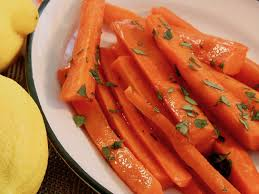

Lemon Glazed Carrots

Description
Very easy and quick to make!
Ingredients
- 2 carrots, sliced 1/4-inch thick
- 1 tablespoon butter
- 1 tablespoon brown sugar
- 1 teaspoon lemon juice
- 1 pinch salt and ground black pepper to taste
Steps
- Place carrots into a large pot and cover with water; bring to a boil.
Reduce heat to medium-low and simmer until carrots are tender, about 8 minutes. Drain.
- Heat butter in a skillet over medium heat; cook and stir carrots, brown sugar, and lemon juice in the melted butter,
stirring often, until sugar has dissolved, 2 minutes.